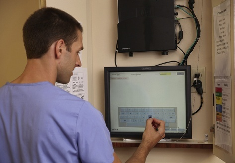

• Describe how reporting differs between a facility and a community setting.
对比机构照护与社区居家环境下口头交班汇报流程、保密环境与汇报渠道的异同。
• Explain why confidentiality is important in all aspects of the client’s care.
阐明案主隐私保护与保密法规（PIPEDA及省属隐私法）在所有照护环节中的极端重要性与法律责任。
• Describe how computers have affected the care-planning process.
探讨计算机信息化、移动平板终端与数字化医疗系统对照护计划管理带来的深远变革。
p. 569
Safe and effective care requires careful planning and coordination. It does not just happen. Facilities and agencies put systems and processes in place to protect clients from harm and to ensure high-quality care. This chapter discusses systems and processes you will need to know as a support worker, including care planning, reporting, and recording.
Nurses in facilities use a method called the care-planning process (also known as the nursing process) to plan and deliver care to clients. Its purpose is to meet the client’s needs for care and support. The care-planning process in facilities has the following steps:
The Five Steps of the Care-Planning Process (Nursing Process) · 照护计划制定流程（护理程序）的五大核心步骤
1. Assessment (评估): Collecting information about the client. 2. Nursing diagnosis (护理诊断): Identifying health problems treated by nursing measures. 3. Planning (计划制定): Establishing priorities and goals, and determining interventions. 4. Implementation (措施执行): Carrying out or performing the planned nursing interventions. 5. Evaluation (效果评估): Assessing and measuring the progress the client has made toward meeting goals.
Assessment occurs through the evaluation of information collected about the client through observation, reflection, and communication. In some facilities, the team leader or primary care nurse is responsible for ensuring that the client’s emotional, social, intellectual, and spiritual health has been assessed and documented. However, while it is the role of a regulated professional to perform a formal physical assessment on a client, support workers are responsible for observing and making basic assessments on clients. Support workers must also report and record their findings according to their agency’s policy. The team leader—a nurse, social worker, or caseworker, depending on the facility or agency—gathers as much information as possible from various sources, including other health care providers on the team, the client’s family, and the client’s past and present medical records.
评估是通过对借助严密临床观察、批判性反思以及深入沟通所搜集到的案主信息进行综合评价与系统分析的过程。在部分照护机构中，护理组长（Team Leader）或责任护士（Primary Care Nurse）全面负责确保案主的情感、社交、智力认知以及精神层面的全人健康均得到详尽评估与规范记录。然而，尽管对案主进行法定的正式身体物理评估是执业受规管专业人员（如注册护士）的专属职责，但支持工作者必须肩负起持续细致观察案主并作出基础临床评估的核心使命。支持人员还必须严格依据所属机构的规章制度，将观察所得即时向上汇报并记入病历。团队负责人（根据机构性质可能是责任护士、社工或个案协调员）会从多渠道广泛整合信息，包括跨学科团队其他医护人员的反馈、案居家属的主诉，以及案主过往与现阶段的完整医疗病历档案。
Record of the care the health care worker has given the client as well as the observations and basic assessments made about the client during care. Also called charting.
Record of the care the health care worker has given the client as well as the observations and basic assessments made about the client during care. Also called charting.
A spoken account of care provided and observations made.
口头交班汇报：医护人员向主管护士或交接班同事口头详尽陈述所实施的照护工作及临床观察到的关键变化。
p. 570
Nursing Diagnosis
第二步：护理诊断（Nursing Diagnosis）
The nurse uses the assessment information to make a nursing diagnosis. A nursing diagnosis is a statement describing a health problem that is treated by nursing measures. The health problem can be an actual problem (the problem is currently present) or a potential problem (the problem might develop in the future). In Canada, nurses often use the diagnostic labels developed by NANDA International (formerly the North American Nursing Diagnosis Association).
A nursing diagnosis and a medical diagnosis are not the same. A medical diagnosis is the identification of a disease or condition by a physician or nurse practitioner. Examples of medical diagnoses include diabetes, cancer, pneumonia, and osteoarthritis. Medical diagnoses remain the same as long as the disease or condition is present. In contrast, a nursing diagnosis describes the client’s physical, emotional, social, or spiritual response to a health problem. Nursing diagnoses can change as the client’s responses change. For example, a client with a medical diagnosis of a fractured hip might have nursing diagnoses of acute pain, impaired physical mobility, and risk for impaired skin integrity. As the fracture heals, pain decreases and mobility improves, so the nursing diagnoses will change.
Planning involves establishing priorities and goals and determining interventions. The client and family members are encouraged to participate in this step.
Setting Priorities: In planning care, the team identifies which problems need immediate attention and which can wait. Physical needs—such as breathing, circulation, nutrition, hydration, and safety—always take priority over other needs (see Maslow’s hierarchy of needs, Chapter 6).
Establishing Goals: Goals are established for each nursing diagnosis. Goals are aims or outcomes that the client wants to achieve with the help of the health care team. Goals should be realistic, measurable, and client-centred. Every goal should also identify time-specific parameters for evaluating the results (FIGURE 26.1). If a client does not achieve a goal by the date set by the client and team, the client must be the first person consulted in establishing a more realistic goal. The team should then meet to develop a plan to help the client meet this goal.
Determining Interventions: After setting the goals, the team will discuss interventions. An intervention is an action or measure taken by the health care team to help the client meet a goal. For example, if a physician or nurse practitioner orders that Mrs. Jacob walk 100 metres twice a day, the nurse will include this order in the care plan to ensure it is followed by the health care team.
Across Canada, various recording methods are used to provide you, as a support worker, with the information you will need to care for your client. Some facilities are still using a Kardex or paper system, although most now provide a computer-generated care plan. The care plan is a document that details the care and services the client must receive during each shift. The plan contains the client’s diagnosis, goals, and the interventions required to achieve each goal. The care plan has several important functions: It lists the care and services the client must receive; It ensures that the client’s care is consistent, no matter who provides the care; and It enables the health care team to effectively communicate details about the client’s care.
FIGURE 26.1 Partial client care plan in a long-term care facility. Each nursing diagnosis has a goal, with nursing measures for each goal. The support worker is among those responsible for following the care plan.
FIGURE 26.1 Text Content: Sample Care Plan Breakdown
图 26.1 文字对照：长期照护机构标准照护计划解构表
Nursing Diagnosis (护理诊断)
Goal (预期目标)
Intervention (护理干预措施)
Constipation related to lack of privacy 便秘：与缺乏隐私环境相关
Resident will have regular bowel movement by 6/30. 院友将于6月30日前恢复规律自主排便。
• Ask resident to use call bell when urge to have bowel movement is felt.（告知院友一旦感到便意立即按呼叫铃） • Answer call promptly.（迅速应答呼叫铃） • Assist resident to bathroom.（协助院友安全前往卫生间） • Close bathroom door for privacy.（关闭洗手间门以维护绝对隐私） • Leave room if resident can be alone; tell resident you are leaving and that you will return if the call bell is turned on.（若院友身体允许独处，告知其你将暂时离开房间并在呼叫铃响起时立即返回）
Sleep pattern disturbance related to noisy environment 睡眠形态紊乱：与周边环境嘈杂相关
Resident will report a restful sleep by 6/29. 院友将于6月29日前主诉获得充分休息与良好睡眠。
• Perform necessary care measures before bedtime, such as providing toileting, oral care, and personal hygiene.（睡前完成如厕、口腔护理及个人卫生等全部基础照护） • Close door to resident’s room.（轻柔关上院友房门） • Turn off television or keep volume low if the resident prefers.（关闭电视，或依院友偏好将音量调至微弱） • Ask staff to avoid talking outside the resident’s room. Ask staff to speak in low voices.（提醒工作人员避免在房门外交谈，走廊交流保持轻声细语） • Turn off unneeded equipment.（关闭所有不必要的运转设备）
BOX 26.1 Setting Goals for Client Care: SMART vs. RUMBA · 专栏 26.1 制定案主照护目标的金标准：SMART 原则与 RUMBA 原则
When setting goals for client care, it is often helpful to use an acronym such as RUMBA or SMART to remember the essential aspects that client care should include:
[SMART Goals] • Specific: Simple enough to be understood and client-centred; e.g., 'The client will be able to grasp a tennis ball with the affected hand.' • Measurable: Goals need to be evaluated to see if they have been met; e.g., 'Walk 10 steps two times a day.' • Achievable: Attainable by the client in order to make them relevant; e.g., 'The client will pick up a fork with the affected hand.' • Realistic: Reasonable for the client to attain; e.g., 'The client will be able to reach the end of the corridor using a walker.' • Time-framed: Time limits set in order to properly determine progress; e.g., 'The client will ... after 3 days.'
[RUMBA Goals] • Realistic: Reasonable for the client to attain. • Understandable: Simple enough to be understood and client-centred. • Measurable: Clear criteria to evaluate whether progress has occurred. • Behaviourable: Written in terms addressing the client's behaviour (e.g., 'The client will walk...' rather than 'The staff will walk with the client...'). • Achievable: Attainable by the client.
The care plan is not a finished document. It is continually reviewed and revised, depending on the client’s needs, condition, and progress. For example, Mrs. Atkins’s care plan is modified when she does not achieve the goal of bathing herself by May 20. Usually, only the case manager or the primary nurse, who has the overall responsibility for the client’s care, makes changes to the care plan. A support worker’s input regarding any changes in the client is very important, as this information will assist the case manager in managing the plan. The support worker’s observations of the abilities and needs of the client can alert the case manager to further assess the client and change the care plan, as required.
Implementation means carrying out or performing an action, and the actions listed in the care plan take place at this stage of the process. The nurse in charge of the client’s care assigns or delegates tasks to the members of the health care team. As the support worker, you are only assigned or delegated tasks that are within the legal limits of your role and job description. The nurse will communicate the tasks assigned or delegated to you according to the facility or agency policy. This communication tells you what tasks you need to perform for each client.
Four Main Functions of the Implementation Process · 措施执行过程的四大核心职能
• Providing the care: Diligently performing assigned nursing measures and support tasks. • Observing the client during the care: Actively monitoring physical and emotional reactions. • Reporting and recording that the care has been completed: Fulfilling professional accountability. • Reporting and recording the observations made during the care: Ensuring continuity of care.
• 提供照护（Providing the care）：一丝不苟地执行分配给你的各项基础护理操作与生活支援任务。 • 在照护过程中持续观察案主（Observing during care）：敏锐感知案主的身体反应、面部表情、耐受力及心理情绪。 • 汇报并记录照护已完成（Reporting and recording completion）：履行执业问责制，确保每项护理落实均有据可查。 • 汇报并记录照护中所见的新观察（Reporting observations）：将观察到的任何病情异常或自理变化及时反馈团队。
Evaluation
第五步：效果评估（Evaluation）
Evaluation means assessing and measuring the progress a client has made toward meeting the goals that a team has agreed on. Goals may be met totally, partly, or not at all. The nurse assesses the reasons a client may have made no progress or only partial progress toward reaching a goal. Your input of your observations will help the nurse change the interventions, complete further assessments, and alter the care plan, as required. Changes to the care plan are made in consultation with the client, family members, and other members of the health care team. Team meetings occur routinely, according to facility or agency policy. These meetings are held to share information, to set and modify goals, and to suggest ideas for modifying a client’s care to meet the client’s needs. As a support worker, you are an important part of the team, as you are the one spending the most time with your client.
Case managers coordinate and manage client care in community settings. The care-planning process used by case managers in community settings usually involves four steps: assessment, planning, implementation, and evaluation. Assessment: The case manager meets with the client and family members to identify the client’s issues and needs. Usually, the meeting takes place in the client’s home. If the client is coming home from the hospital, the case manager uses information from the hospital record or information obtained through a referral sent to the case manager’s agency. The referral information may, in some cases, have been completed by a hospital case manager or the discharge planner. The family is very important to the assessment process in community care settings. Serious illnesses and disabilities can greatly affect family life. Family members take on new roles, including the role of caregiver to the client with an illness or disability. The case manager considers the needs, health, and well-being of the entire family. The case manager also considers whether family members need help adjusting to the situation or training to help them care for the client. Together, the case manager, the client, and family members decide what care and services are needed.
Planning in Community Settings: Together, the case manager, the client, and the family develop a service plan (also called a care plan). The plan outlines the goals and the services the client will receive. The case manager arranges for the services, which may include home care, Meals on Wheels, occupational therapy, and physiotherapy. The case manager contacts agencies to provide the services. Implementation: The agency assigns tasks to the support worker. The support worker provides the care, observes the client, and reports and records care and observations according to agency policy. Evaluation: The case manager periodically meets with the client and family to evaluate the effectiveness of the services. If the client’s needs change, the case manager adjusts the service plan.
社区环境下的计划制定：个案经理、案主及家属共同制定一份服务计划（Service Plan，在社区亦称照护计划）。该计划明确界定案主的达标目标以及将要接受的具体公共服务项目。个案经理负责统筹联络各类外部机构，例如协调居家照护、爱心送餐（Meals on Wheels）、职能治疗（OT）及物理理疗（PT）等。在执行阶段，委派的照护机构向支持人员下达任务分配表，支持人员执行日常照护、保持敏锐观察，并依法规做书面记录与口头汇报。在效果评估阶段，个案经理会定期上门回访，重新检视服务成效，并根据案主身体自理能力的改善或退化动态调整服务计划的内容与频次。
OBSERVATION AND BASIC ASSESSMENT
临床观察与基础评估（Observation and Basic Assessment）
Observation is the active process of using the senses to obtain information about the client’s current condition. It is a critical part of the support worker’s role. You spend more time with clients than any other member of the health care team. Therefore, you are in a unique position to notice subtle changes in their physical and emotional condition. Basic assessment involves collecting information about the client’s basic health status, such as vital signs, skin condition, mobility, and ability to perform activities of daily living (ADLs).
Information gathered through observation is divided into two categories: objective data and subjective data. Objective data (also called signs) are observations made by using the senses of sight, hearing, touch, and smell. You can see a rash, hear coughing, feel skin warmth, and smell an unusual odour. Objective data can be verified by others. For example, a pulse of 82 beats per minute, a red area over the coccyx measuring 2 cm, or a client crying are all objective data.
Subjective data (also called symptoms) consist of information reported by a client that cannot be directly observed by others. Pain, nausea, fear, dizziness, numbness, and feeling tired are symptoms. When reporting or recording subjective data, do not interpret the client’s comments. Use the client’s exact words. Put quotation marks around the client’s statements. For example, write: The client stated, “My stomach feels like it is on fire.” Do not write: The client had severe stomach pain.
Describing Your Observations and Basic Assessments
描述观察与评估结果的黄金法则
Key Rules for Recording Observations · 临床观察记录的两大核心守则
• Be precise and accurate: Provide specific, measurable details of what you actually see, hear, touch, and smell. Never write vague summaries like 'had a good day' or 'was better today.' • Do not interpret or make assumptions: An assumption is a guess based on insufficient evidence. Report facts, not conclusions. Let the regulated nurse and physician interpret the clinical significance of the data.
• 务必精确严密（Be Precise and Accurate）：提供切实可见、可量化的具体事实细节，坚决杜绝如“今天表现不错”、“状态好多了”等毫无临床价值的模糊套话。 • 绝不主观臆断（Do Not Make Assumptions）：臆断是缺乏证据的主观瞎猜。只汇报客观事实，不作定性结论。数据的临床诊断意义应当留由受规管护士和执业医生来判断。
BOX 26.2 Guide for Making Observations and Basic Assessments (Part 1) · 专栏 26.2 临床基础观察与评估系统性操作指引（第一部分：神经感知、肢体活动、疼痛、皮肤、五官与呼吸）
[Ability to Respond / 反应与认知能力] • Is the client easy or difficult to rouse? (是否容易唤醒？) • Can the client tell you their name, the time, and where they are? (能否正确说出姓名、时间与所在地？时空定向力) • Does the client answer questions correctly and speak clearly? (答话是否切题？言语吐字是否清晰？) • Is the client calm, restless, or excited? (情绪状态是镇静、烦躁不安还是异常兴奋？)
[Movement / 身体活动机能] • Can the client squeeze your fingers with both hands equally? (双手握力是否对称强劲？) • Can the client walk, move arms and legs? (能否独立行走？四肢活动度如何？) • Are movements shaky, jerky, or coordinated? (动作是否存在颤抖、抽动或步态不稳？) • Does the client complain of stiff or painful joints? (是否主诉关节僵硬或活动痛？)
[Pain or Discomfort / 疼痛与不适评估] • Where is the pain located? Ask client to point to it. Does it radiate? (疼痛部位在哪里？是否放射？) • When did it begin? What was the client doing? How long does it last? (起病时间、诱因与持续时长) • How does the client describe the pain? (Sharp, severe, knifelike, dull, burning, aching, comes and goes) (痛感性质：锐痛、刀割样、钝痛、灼痛、隐痛、阵发性？) • What relieves the pain? Position of comfort? (何种体位或措施能缓解疼痛？)
[Skin / 皮肤完整性] • Is skin pale, flushed, cyanotic, or jaundiced? (肤色苍白、潮红、发绀还是黄染？) • Is skin cool, warm, hot, moist, or dry? (皮温凉热度与干湿润泽度) • Is skin intact? Broken areas, redness over bony prominences, bruises, or itching? (皮肤是否完整？骨隆突处有无发红压疮前兆、瘀斑或抓痕？)
BOX 26.2 Guide for Making Observations and Basic Assessments (Part 2: Elimination, Appetite, ADLs) · 专栏 26.2 临床基础观察与评估系统性操作指引（第二部分：排泄、食欲营养、日常生活自理能力）
[Bowels and Bladder / 胃肠与泌尿排泄] • Is the abdomen firm, distended, or soft? (腹部是柔软还是胀满坚硬？) • Does the client complain of gas (flatulence) or cramping? (是否主诉腹胀腹痛？) • Amount, colour, consistency, and frequency of feces. (大便的量、颜色、性状及排便频次) • Bowel continence status. (是否存在大便失禁？) • Pain, burning, or difficulty urinating (dysuria). (排尿是否伴随疼痛、灼烧感或排尿困难？) • Amount, clarity, colour, and odour of urine. (尿液的量、清亮浊度、颜色及有无恶臭？) • Urinary continence and frequency. (控尿能力与日夜排尿频次)
[Appetite and Fluid Intake / 食欲与水分摄入] • How much of the meal was eaten? (Percentage intake: e.g., 25%, 50%, 75%, 100%). (进餐摄入百分比) • Food and liquid preferences. Can the client chew and swallow safely? (咀嚼吞咽功能是否正常？有无呛咳？) • Complaints of nausea or vomiting (amount, colour of vomitus). (有无恶心呕吐？呕吐物量与性状)
[Activities of Daily Living (ADLs) / 日常生活自理能力] • Can the client perform personal hygiene, dressing, and grooming independently, with assist of 1, assist of 2, or total care? • Does the client use the toilet, commode, bedpan, or urinal? • What assistive devices are needed for ambulation and transfer?
【日常生活活动能力（ADL）】 • 案主在洗漱沐浴、口腔清洁、梳头修饰及穿衣更衣等环节是完全独立（Independent）、需一人轻度协助（Assist of 1）、需两人转移（Assist of 2），还是完全依赖全护理（Total Dependent）？ • 如厕形态是独立去洗手间、使用床旁坐便椅、便盆还是尿壶？ • 转移与助行时需要使用何种辅具（手杖、四脚拐、助行架、机械移位机）？
Clinical Safety: Observations to Report to the Nurse Immediately · 临床红线：必须立即向主管护士口头汇报的紧急危象
• Sudden change in the client's ability to respond or level of consciousness • Sudden weakness or paralysis of the face, arm, or leg (FAST stroke signs) • Chest pain, pressure, or shortness of breath • Severe sudden pain anywhere in the body • Sudden change in vital signs (fever over 38.5°C, pulse >100 or <60, extreme BP changes) • Bleeding, wound dehiscence, or blood in vomitus, urine, or stool • Fall or any incident resulting in possible injury • Signs of severe allergic reaction (hives, lip swelling, difficulty breathing)
“Mr. Munro had a good day.” （“芒罗先生今天过得不错。”——毫无客观事实支撑，缺乏临床价值）
“Mr. Munro walked the length of the hall twice with his walker without shortness of breath. He ate 75% of his lunch and participated in the music activity for 45 minutes.” （“芒罗先生借助助行架在走廊内往返行走了两次未诉气促。午餐摄入75%，并积极参与了45分钟的音乐康乐活动。”）
“Mrs. Ryder is depressed today.” （“莱德太太今天患了抑郁症。”——滥用医学诊断，属主观猜测）
“Mrs. Ryder refused to get dressed or come out of her room for breakfast. When asked how she felt, she stated, ‘I just want to be left alone; what’s the point anymore?’ and began crying.” （“莱德太太拒绝更衣，拒绝离开房间享用早餐。当被问及感受时，她自诉：‘我只想一个人呆着，活着还有什么意义呢？’并开始抽泣。”）
“Mr. Sayeed has a reddened, unbroken area measuring 3 cm across on his sacrum that did not fade after 30 minutes of relieving pressure.” （“赛义德先生骶骨处见一处直径3厘米的皮肤发红未破损区域，在解除局部压迫30分钟后红斑仍未消退。”）
VERBAL REPORTING
口头交班汇报（Verbal Reporting）
As a support worker, you need to report and record your actions and observations. A verbal report is the spoken account of care provided and observations made. Employers use different methods for verbal reporting, and all have policies about how often to report and what to report, so you need to know those policies. In certain circumstances, you must always contact your supervisor immediately. Verbal reports allow for quick, up-to-date information sharing. However, they lack a permanent record of what is reported.
Remember that information about a client is confidential. Be careful when communicating client information to other members of the health care team. Choose a quiet area where you will not be overheard by others. Do not discuss a client in their room or in a common area. Keep all your conversations about clients professional. When making reports by phone to your supervisor from your own home, make sure no one in your home can hear you.
Verbal Reporting in a Facility: In a facility, support workers report actions and observations to the charge nurse or to the supervisor. Reports must be prompt, thorough, and accurate. Always include the client’s name, the room and bed number, and the time you made the observation or gave the care. Report only what you observed or performed. Prioritize items—start your report with the most important points. At the end of a shift, the charge nurse gives a report (called the end-of-shift report) to the incoming charge nurse. This report includes information about each client’s condition, the care given, and the care that must be given on the next shift. Some facilities expect all team members to hear the end-of-shift report as they come on duty.
Verbal Reporting in a Community Setting: Employers have their own policies for verbal reports. Most employers in the community do not require support workers to make daily verbal reports. However, call your supervisor immediately if something unexpected happens. Follow employer policy and specific guidelines for making telephone reports.
A chart (also known as a record) is a permanent and legal document required to record a client’s condition, signs and symptoms of any illness, the care and treatment given to the client, and the client’s responses to care. This record documents the care provided from admission to discharge or death and is filed and kept (in Ontario, for a minimum of 5 years; in many acute and pediatric jurisdictions, 10 to 28 years). It is used as a reference for future health care treatment, and it could be subpoenaed (ordered) for a court case involving malpractice.
Professional Legal Axiom: If It Was Not Documented, It Was Not Done · 医疗法律黄金铁律：凡未做记录者，在法律上视同从未执行！
In a court of law, a care measure or observation that is not recorded in the chart is legally considered never to have happened. Even if you administered the most thorough personal care or turned a bedridden client every 2 hours, if you failed to document it on the chart, the law presumes you were negligent and did not perform the care. Always document accurately and promptly.
In this age of technology, most facilities and agencies have implemented electronic health records (EHRs) or electronic medical records (EMRs). As a support worker, you are ethically and legally bound to keep client information confidential, including any information about the client that you record in the client chart, whether by hand or on an electronic device. Federal and provincial legislation—such as the Personal Information Protection and Electronic Documents Act (PIPEDA) and provincial health information protection acts—strictly mandate the confidentiality of personal health information.
BOX 26.5 Information Commonly Found on a Kardex · 专栏 26.5 临床 Kardex 快速卡片索引系统核心收录信息
• Client's full name, room number, bed number, and physician • Medical diagnosis and core allergies (highlighted prominently) • Code status (resuscitation wishes: DNR / Full Code) • Current medications and intravenous (IV) therapies • Prescribed special diets and fluid restrictions / thickened liquids • Required activities of daily living (ADL) assistance level • Transfer and mobility status (e.g., walker, mechanical lift, 1-person assist) • Special equipment needs (e.g., oxygen cannula, catheter care, splints) • Scheduled routine care measures and treatment times
Access to confidential client charts is strictly regulated by privacy legislation and facility policies. Only health care team members who are directly involved in the client’s care have authorized access to the chart. Those not directly involved usually are not allowed access. Housekeeping staff, kitchen staff, office clerks, and volunteers, for example, do not need to see the records or hear confidential details. In home care settings, only authorized family members have access. Your supervisor will tell you who is legally permitted to inspect the record.
Core Functions of a Client Record / Chart · 案主病历档案的六大核心支柱功能
1. Communication: Serves as the central vehicle for interprofessional dialogue. 2. Currency of Information: Reflects the real-time, dynamic health status. 3. Continuity of Care: Connects past health history with present treatments. 4. Quality Assurance: Verifies that care meets provincial best practice standards. 5. Education and Research: Provides clinical data for research and evidence-based practice. 6. Funding: Governs government and agency resource allocation based on client acuity.
Different programs are available, and, since most employers design their own documents, charts tend to vary from employer to employer. Common documents contained in a client’s chart include:
• Data forms: Include details about long-term care clients’ physical, emotional, social, and cognitive health.
• Assessment forms: Used by nurses and case managers to record a client’s health issues and needs (FIGURE 26.3).
• Home assessment forms: Document environmental changes needed in the client’s home.
• Care plans: Contain goals and interventions based on the assessment.
• Progress notes (narrative notes): Record information about care given, responses, and special observations (FIGURE 26.4).
• Graphic sheets: Record measurements made on every shift or 3 to 4 times per day (blood pressure, temperature, pulse, respirations, weight) (FIGURE 26.5).
• Activities-of-daily-living (ADLs) flow sheets: Record actions relating to hygiene, eating, mobility, and elimination (FIGURE 26.6).
• Task sheets: Used in community settings to track daily care and services provided (FIGURE 26.7).
• Other flow sheets: Monitor frequent measurements (e.g., vital signs every 15 minutes, strict intake and output).
FIGURE 26.3 Example of an assessment form that may be used by support workers in a long-term care facility. Many agencies are replacing handwritten notes with similar electronic forms of documentation. (Courtesy St. Joseph’s at Fleming, Peterborough, ON.)
Assessment forms in long-term care facilities allow support workers to record basic observations on a daily or shift-by-shift basis. As shown in FIGURE 26.3, these forms capture critical parameters including emotional affect, physical hygiene, skin condition, mobility status, nutritional intake, and elimination patterns. Completing these assessments accurately ensures that the entire multidisciplinary team has immediate access to up-to-date resident profiles.
• Summary reports summarize care and service provided over a period of time. These reports are used in community settings and by some long-term care facilities to provide summaries of the client’s condition monthly or every second or third month.
• Incident reports are written accounts made after an accident, error, or unexpected event. In the community, these reports are commonly called occurrence reports (see Chapter 20).
• Kardex is a card file that summarizes information in the chart. It usually includes the client’s current diagnosis, medications, treatments, any special equipment needs, and routine care measures. The Kardex system provides a quick source of current information and can be updated frequently to reflect changes. The Kardex system is used in some facilities but is rarely used in community settings.
Documentation (also called charting) is a record of the care the health care worker has given the client as well as the observations and basic assessments made about the client during care. Documentation is a legal requirement for health care providers. Support workers working in the community or the home care setting are required to document the care they provide. In facilities, support workers may or may not document care, depending on the agency’s policy.
FIGURE 26.4 An example of narrative notes from a community agency. Many agencies are replacing handwritten notes with similar electronic forms of documentation. (Courtesy Nightingale Nursing Registry, Peterborough, ON.)
FIGURE 26.5 Graphic sheet used to track vital signs, intake, output, and routine measurements chronologically. (Courtesy Credit Valley Hospital, Mississauga, ON. Reprinted with permission.)
FIGURE 26.6 Some of the items in an activities of daily living (ADL) flow sheet, detailing standardized codes for elimination, nutrition, mobility, and safety checks. (Courtesy Nightingale Nursing Registry, Peterborough, ON.)
L = Large (大量); M = Medium (中量); S = Small (少量); IC = Incontinent (大便失禁)
Bladder Elimination 排尿状态
I / IC / FC
I = Independent (自主排尿); IC = Incontinent (尿失禁); FC = Foley catheter (留置导尿管)
Feeding Status 进餐状态
I / S / F / SP / TL
I = Independent (自主进食); S = Set up (协助备餐摆放); F = Staff feed (人工喂食); SP = Swallow precautions (吞咽防误吸预防); TL = Thickened liquids (液体加增稠剂)
Weight-Bearing 负重能力
TT / AT / P / F / NWB
TT = Toe touch (足尖微点地); AT = As tolerated (依耐受度负重); P = Partial (部分负重); F = Full (完全负重); NWB = No weight bearing (严禁负重)
Transfer Status 转移状态
ML / SBA / A
ML = Medilift (机械移位机); SBA = Stand by assist (床旁警觉看护); A = Assist of 1 or 2 (单人或双人搀扶协助)
Safety Measures 安全防护
LT / SR / BA / SB
LT = Lap tray (膝上安全托盘); SR = Side rails (床旁安全护栏); BA = Bed alarm (离床报警感应器); SB = Seat belt (轮椅安全带)
Mobility Activity 活动方式
A / GC / T / W/C
A = Ambulate (步行走动); GC = Gerichair (老人轮转躺椅); T = Turn every 2 hrs (每2小时轴线翻身); W/C = Wheelchair (轮椅推行)
Four Core Anchors When Documenting Care · 书面记录的四大黄金锚点
1. What you observed, including subjective symptoms the client reported to you. 2. What you did (the exact care and interventions performed). 3. When you did it (exact date and 24-hour military time). 4. The client's response (tolerance, pain level, improvement, or emotional state).
FIGURE 26.7 An agency client care task sheet used by community support workers to check off completed daily tasks, record vital signs, and note special client observations. (Courtesy Nightingale Nursing Registry, Peterborough, ON.)
In home care and community health agencies, client care task sheets are carried by support workers to every assignment. As tasks are completed—such as morning care, bathing assistance, meal preparation, medication reminder, and range-of-motion exercises—the support worker checks off the corresponding dates. The bottom of the form provides spaces for recording vital signs, hours worked, and special notes regarding client health changes. These sheets serve as verifiable proof of service delivery for provincial health insurance and agency billing.
Health care facilities and community agencies across Canada widely use the 24-hour clock (also called military time) to document time. The 24-hour clock eliminates the potential confusion between morning (a.m.) and afternoon/evening (p.m.) hours, which can lead to catastrophic medication and treatment errors. The 24-hour clock has four digits: the first two digits represent the hour (from 00 to 24), and the last two digits represent the minutes (from 00 to 59). No colons or a.m./p.m. designations are used.
Agencies and facilities use a variety of structured methods for progress charting. Core models include:
• Narrative charting: Chronological log of the client's day.
• SOAP charting: Four essential components:
S — Subjective data (what the client reports)
O — Objective data (measurable signs seen, heard, felt)
A — Analysis / Assessment (clinical interpretation of the data)
P — Plan of care (interventions to address the issue)
• PIE charting: Problem, Intervention, Evaluation.
• ADPIE charting: Analysis, Diagnosis, Problem, Intervention, Evaluation.
• Focus (DAR) charting: Data, Analysis & action, Response.
各大医疗机构在书写病程记录时采用多种标准结构化格式，常见核心模型包括：
• 叙述性记录法（Narrative charting）：按严格时间先后顺序记录案主全天情况的流水账式记录。
• SOAP 记录法：包含四大黄金要素：
S — 主观数据（Subjective data：案主亲口陈述的原话与主观感受）
O — 客观数据（Objective data：医护亲眼所见、亲手所触或仪器测量的客观指标）
A — 分析评估（Analysis/Assessment：对主客观数据进行的临床专业判断）
P — 照护计划（Plan：针对上述问题拟定的具体护理干预措施）
• PIE 记录法：问题（Problem）、干预措施（Intervention）、效果评估（Evaluation）。
• ADPIE 记录法：分析、诊断、问题、措施实施与成效评估。
• 焦点 DAR 记录法：数据（Data）、行动措施（Action）、案主反应（Response）。
BOX 26.6 Guidelines for Electronic Documentation · 专栏 26.6 电子病历系统（EMR/EHR）操作黄金安全守则
• Log on using only your own personal identification number (PIN) or password. Never share your credentials with anyone. • Never document under another staff member's account or allow someone to document under yours. • Document only what you have directly observed, been told, or performed. Never document as a favour for a colleague. • Use only employer-approved medical abbreviations. Correct spelling, grammar, and professional tone are mandatory. • Care for digital devices: Never eat or drink near computers, never drop tablets, and never leave devices in cars where they can be stolen or damaged by extreme temperatures. • Maintain strict confidentiality: Angle screens away from visitors, never leave screens open, and always log off immediately when stepping away.
BOX 26.7 Documentation Guidelines: Paper Charting and Universal Legal Rules · 专栏 26.7 病历记录书写规范：纸质手写与通用法律红线
[For Documentation in Writing / 纸质手写规范] • Always use ink: Follow employer policy on ink colour (usually permanent black or dark blue). • Legible and neat writing: Sloppy handwriting leads to medical errors and legal vulnerability. • Include date and time: Record exact 24-hour military time whenever an entry is made. • Never erase or white out: If you make an error, draw a neat single horizontal line through it (keeping text readable), write 'error' or 'mistaken entry' above it, sign your initials, date and title. Never use correction fluid or obliterate text. • Sign all entries: Full name or initials with professional credential title (e.g., 'E. Smith, PSW'). • Do not leave blank lines: Draw a line through unused spaces to the end of the line before signing, preventing unauthorized additions. • Client identification: Ensure every form is properly stamped with the client's name and medical record number.
[For All Documentation / 全局通用法则] • Never chart a procedure before it is completed (pre-charting is illegal). • Be objective, concise, and factual. Record direct client quotes in quotation marks. • Report and record safety measures used (bed rails, transfer belts) to protect against negligence lawsuits.
FIGURE 26.8 The 24-hour clock. The outer circle represents 24-hour military time (0100 to 2400), while the inner dial shows traditional 12-hour clock times. (From Sorrentino's Canadian Textbook for the Support Worker, 5th ed.)
Recording in a Facility: In most acute-care and long-term care settings, you will be required to document your care electronically using computer workstations or bedside terminals. However, computers are not always available, so you may be required to record care in writing on ADL flow sheets or graphic forms. You may also be expected to give verbal summary reports on care provided to your assigned clients at shift change.
Recording in the Community: Community agencies and case managers keep master client charts in their central office; however, essential parts of a client’s chart are usually kept in the client’s home, often in a binder. The forms in the binder usually include the care plan, progress notes, ADL checklists, and task sheets. Most agencies provide forms called client care task sheets that the support worker carries to each home assignment. As you complete tasks, you check off the relevant areas. When finished, you hand them in or upload the gathered information weekly or monthly.
As a support worker, you are ethically and legally bound to keep client information confidential, including any information about the client that you record in the client chart, whether by hand or on an electronic device. The federal government and provincial legislatures have established strict statutes—such as the Personal Information Protection and Electronic Documents Act (PIPEDA)—to protect privacy. Breaching confidentiality can result in termination of employment, revocation of certifications, and severe civil and criminal penalties.
BOX 26.9 Examples of Progress Notes Written in Different Formats · 专栏 26.9 临床病程记录不同书写格式实战对照范例（SOAP、ADPIE 与 Focus DAR）
[SOAP Format / 主观-客观-分析-计划] Date: 1/19/16 | Time: 1630 | Focus: Knowledge deficit related to surgery S: 'I'm so worried about what it will be like after surgery.' O: Client asking frequent questions about surgery. No previous surgical experience. Wife present as support person. A: Knowledge deficit regarding surgery related to inexperience. Expressing anxiety. P: Explain routine preoperative preparation. Demonstrate and explain rationale for TCDB (turning, coughing, and deep breathing) exercises. Provide teaching booklet. — S. Lazarus, RPN
[ADPIE Format / 分析-诊断-问题-干预-评价] A: Stated, 'I don't know anything about this surgery.' D: Knowledge deficit regarding surgery related to inexperience. P: Explain preoperative care to client and assess for understanding. I: Explained normal preoperative preparations. Demonstrated TCDB exercises. Provided booklet on postoperative care. E: Client demonstrates TCDB exercises correctly. Needs review of postoperative nursing care. — S. Lazarus, RPN
[Focus Charting (DAR) / 数据-行动-反应] D: Client states, 'I'm so worried about what it will be like after surgery.' Asking frequent questions. No previous surgery. A: Explained normal preoperative preparations. Demonstrated TCDB exercises. Provided booklet. R: Client demonstrates TCDB exercises correctly. Needs review of postoperative nursing care. — S. Lazarus, RPN
FIGURE 26.9 An electronic medical record (EMR) accessible on a secure handheld tablet device in community and clinical settings.
图 26.9 社区及临床照护中通过高安全性手持平板终端访问的电子病历（EMR）系统。

FIGURE 26.10 This support worker is recording client observations electronically on a portable computer workstation.
图 26.10 一线支持人员正在移动便携式计算机工作站前规范录入案主的日常照护与临床观察记录。
p. 588
Transporting Confidential Documents
绝密医疗文书的物理转运安全规范
You may transport a document from a central file area to a client’s room or other location in a facility, or, in a community setting, you may carry with you confidential information about a client. Be very careful when transporting confidential documents. Concentrate on what you are doing, and remind yourself of the importance of your task. If you become distracted, you could easily leave the documents in an inappropriate place, such as on a cafeteria table, in an open car seat, or in a public restroom. Always use sealed privacy envelopes or locked transport bags.
Impact of Electronic Communication on Health Care and Recording
数字化与网络电子通信对现代医疗记录的深远变革
Electronic communication has opened the door to many changes in the way health care is researched, provided, and documented. For example, many clients research their health needs on the Internet. However, search engines do not screen available information for accuracy. Government websites and verified health portals provide reliable answers. Furthermore, in many remote areas across Canada, health care may be difficult to access. To assist clients in isolated communities, health care workers can send client data, photos of wounds, and vital sign logs electronically to specialists hundreds of kilometres away through telehealth. Electronic health records are easy to read and transfer, bridging geographic barriers and ensuring timely, life-saving care.
• Most facilities, agencies, and acute-care settings now record everyday care electronically. Some facilities require all client care to be documented electronically, whereas others are still using handwritten forms and documentation. If you are required to use electronic documentation, you will be educated in the reporting system used by your employer. • In long-term care facilities and community agencies, nurses use a method called the care-planning process (or nursing process), which includes assessment, nursing diagnosis, planning, implementation, and evaluation. Nurses use information from support workers to adjust the care plan to meet the client’s needs. • In some provinces or territories, the funding an employer receives is based on the recorded information regarding the care given, the amount of time taken to provide the care, and the amount of assistance the client needs. Accurate reporting is essential. • As a support worker, you need to understand your employer’s policy regarding verbal reports. In care facilities, you must make sure your conversations are confidential, and in the community, you must ensure no one can overhear any conversation about your client.
CRITICAL THINKING IN PRACTICE: Prioritizing Care for Mrs. Ryder · 临床执业批判性思维：莱德太太白班（0700–1500）照护任务科学排序与汇报决策
Scenario: You are working from 0700 hours to 1500 hours. Mrs. Ryder is one of your assigned clients. Plan and prioritize Mrs. Ryder’s care from the following tasks included on your assignment sheet: • Bring her in a mechanical lift to the tub room and assist her with a tub bath. • Assist her with breakfast in the dining room at 0800 hours. • Help her to her daughter’s car at 1200 hours for lunch outside the centre. • Take her blood pressure and pulse before 1000 hours. • Provide morning care, including oral care, combing her hair, and dressing. • Change her bed linens. • Help her to the bathroom before meals and to physiotherapy as needed. • Assist her to her chair to rest after physiotherapy and after lunch.
Clinical Decision Guide: 1. 0700–0800: Assist with toileting, morning oral care, comb hair, and dress for breakfast. Assist to dining room by 0800. 2. 0800–0900: Breakfast in dining room. Return to room, assist to chair or rest. 3. 0900–1000: Measure blood pressure and pulse (before 1000). Assist to bathroom and escort to physiotherapy as scheduled. 4. 1000–1100: While Mrs. Ryder is at physiotherapy, change her bed linens and tidy room. Receive her from physiotherapy, assist to chair to rest. 5. 1100–1200: Tub bath using mechanical lift, dress in fresh clothes for outing, assist to bathroom. 6. 1200: Escort Mrs. Ryder safely to her daughter's car for outside lunch. 7. Documentation: Record completed tasks, vital signs, bath tolerance, and transfer status on the client chart.
REVIEW QUESTIONS (Questions 1 to 5)
Answers to these questions are at the bottom of page 590. Circle the BEST answer.
1. Assessment involves:
A. Collecting information about the client
B. Carrying out or performing the elements of the care plan
C. Implementing the care plan
D. Evaluating and measuring the effectiveness of the care plan
2. The statement “Urinary elimination, impaired” is on a care plan. This statement is a(n):
A. Nursing diagnosis
B. Assessment
C. Evaluation
D. Medical diagnosis
3. Mrs. Muryama says, “I didn’t sleep at all last night because of the pain in my back.” This statement is:
A. A nursing diagnosis
B. Subjective data
C. An intervention
D. Objective data
4. You record the following: “Mr. Munro was better today.” What is wrong with this observation?
A. It does not say better than what.
B. It is an assumption.
C. It is an assessment.
D. Nothing is wrong with this observation.
5. Which statement is false?
A. A chart is discarded after the client is discharged from hospital.
B. A chart is a permanent, legal document.
C. A chart is updated as a client’s needs and condition change.
D. A chart provides a record of the accountability of health care providers.
章末全真自测试题（第 1 题至第 5 题，答案位于第 590 页底部，单项选择最佳选项）：
1. 在照护计划流程中，评估（Assessment）涉及：
A. 收集关于案主的临床信息与数据
B. 执行或落实照护计划中的措施
C. 实施照护计划
D. 评价与衡量照护计划的执行成效
2. 照护计划上记录着“排尿功能受损”。该专业陈述属于：
A. 护理诊断（Nursing diagnosis）
B. 临床评估（Assessment）
C. 效果评估（Evaluation）
D. 医疗诊断（Medical diagnosis）
3. 村山太太主诉：“我昨晚整夜没睡，因为后背实在疼得厉害。”该陈述属于：
A. 护理诊断
B. 主观数据（Subjective data）
C. 护理干预措施
D. 客观数据（Objective data）
4. 你在病历中写道：“芒罗先生今天好多了。”该观察记录存在什么问题？
A. 未说明比什么更好
B. 这属于缺乏客观事实根据的主观臆断（Assumption）
C. 这是一个专业评估
D. 该记录没有任何问题
5. 关于案主病历档案，下列哪项陈述是错误的（False）？
A. 案主出院后，病历即可丢弃销毁（错误，病历是永久法定文件，不可销毁）
B. 病历是一份永久性的法定法律文件
C. 随着案主病情与需求的演变，病历必须实时更新
D. 病历为医护人员的执业问责提供法律记录凭证
p. 590
REVIEW QUESTIONS (Questions 6 to 10)
6. A graphic sheet:
A. Records a client’s activities of daily living (ADLs)
B. Is used to record measurements and observations made three to four times per day
C. Contains information about the care given, the client’s responses to care, and observations about the client’s condition
D. Summarizes a client’s care and services over a period of time
7. A data form:
A. Is used in long-term care settings to detail a person’s physical, emotional, social, and intellectual health
B. Is used in home care settings to assess changes that may be needed in the home
C. Includes boxes that are checked for the day on which care or service was provided
D. Is another name for Kardex
8. In 24-hour time, 1330 is:
A. 3:30 p.m.
B. 3:30 a.m.
C. 1:30 p.m.
D. 1:30 a.m.
9. If you make an error when recording, you should:
A. Put an X through the error, and write “error” over it
B. Erase the error
C. Draw a single line through the error, and write “error” over it
D. Use correction fluid
10. In a long-term care facility, who has access to clients’ charts?
A. All staff members
B. Only the office staff and the nursing staff
C. Nurses, support workers, physiotherapists, occupational therapists, and dietitians
D. It depends on facility policy and procedures.
章末全真自测试题（第 6 题至第 10 题）：
6. 生命体征图表单（Graphic sheet）的主要功用是：
A. 记录案主的日常生活活动自理情况（ADL）
B. 用于连续记录一日内测定 3 到 4 次或更频繁的生理测量值与观察指标
C. 包含关于已实施照护、案主反应及病情变化的叙述性信息
D. 总结案主在一段时期内所接受的综合照护服务
7. 在长期照护机构中，基础数据表单（Data form）：
A. 用于系统记录案主身体机能、情绪心理、社会适应与智力认知的全人基线健康数据
B. 用于在居家环境中评估家庭适老化改造需求
C. 仅包含用于勾选提供服务日期的勾选框
D. 是 Kardex 系统的另一种别称
8. 在 24 小时制军事计时法中，1330 对应：
A. 下午 3:30
B. 凌晨 3:30
C. 下午 1:30（1330 - 1200 = 下午 1:30）
D. 凌晨 1:30
9. 若在手写纸质病历上出现笔误，你应当：
A. 在错误处打大红叉（X），并在上方注明“error”
B. 用橡皮彻底擦除错误痕迹
C. 用笔画一条水平单实线穿过错误文字，在上方写明“error”并签名
D. 涂抹涂改液或修正带遮盖
10. 在长期照护机构中，谁具有查阅案主病历档案的法定合法授权？
A. 机构内全体工作人员
B. 仅限办公室行政人员与护士
C. 护士、支持人员、理疗师、职能治疗师及营养师
D. 依据机构规章制度与知情同意规范，仅限直接参与该案主照护治疗的授权团队成员
Official Publisher Review Answers & Photo Credit · 原版教材官方权威自测标准答案与版权署名